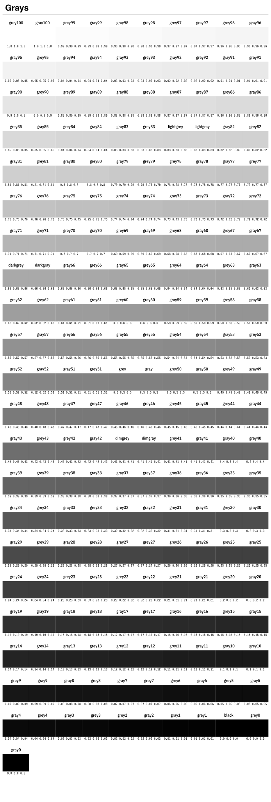
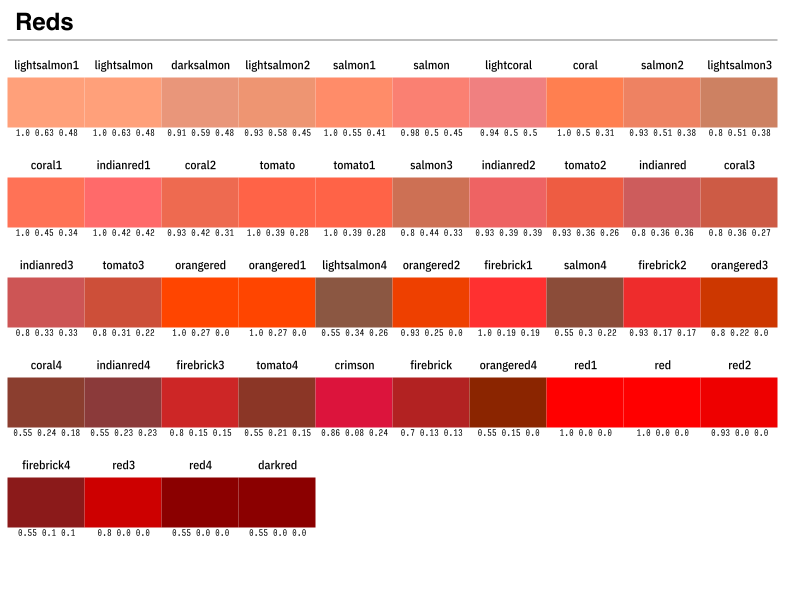
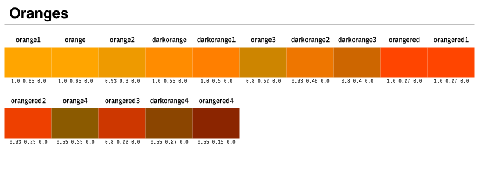
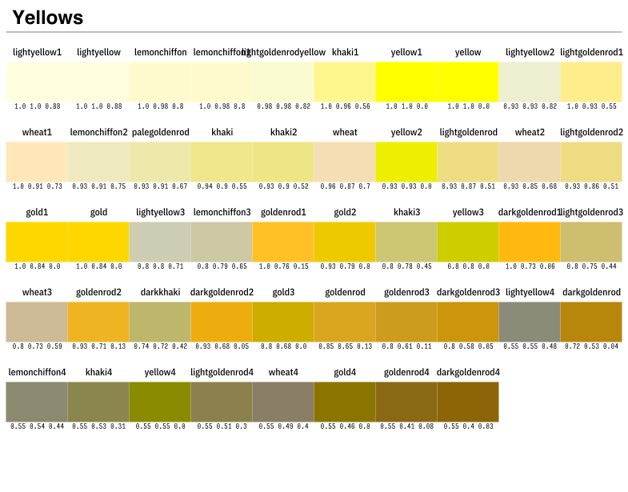
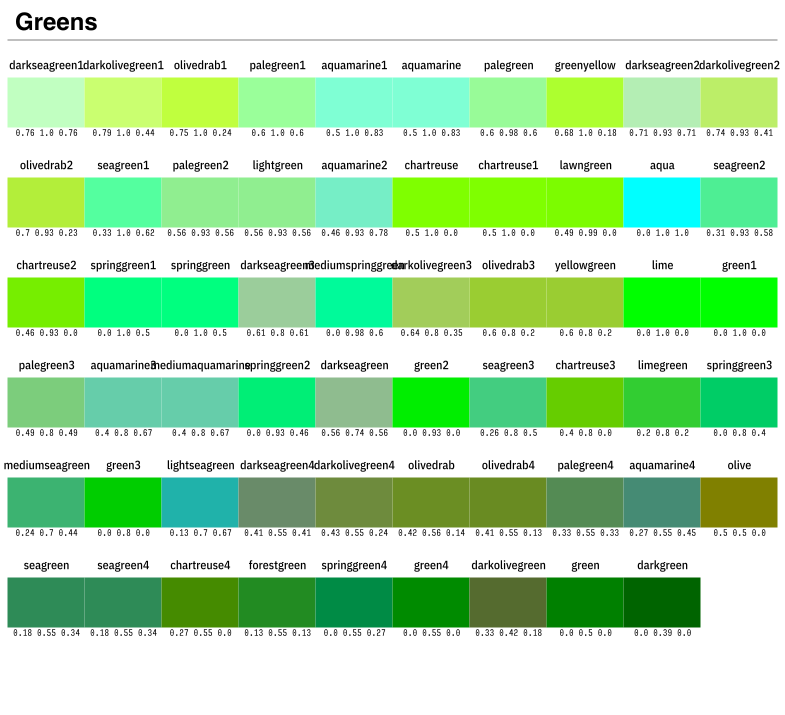
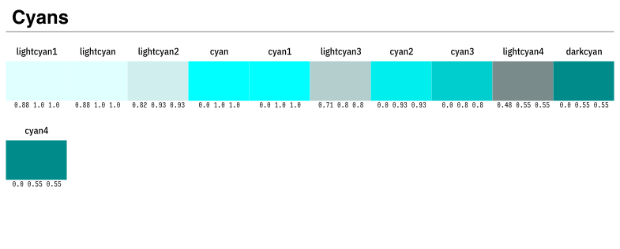
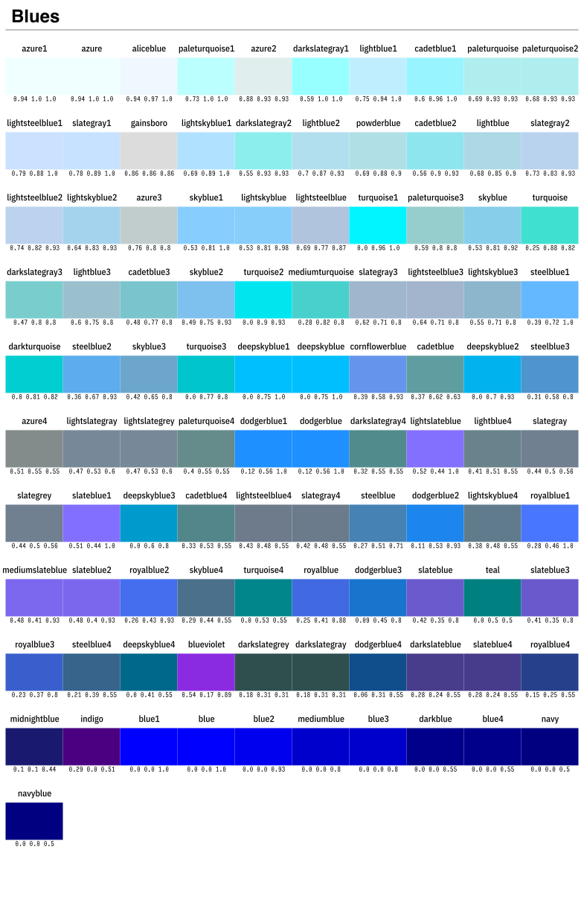
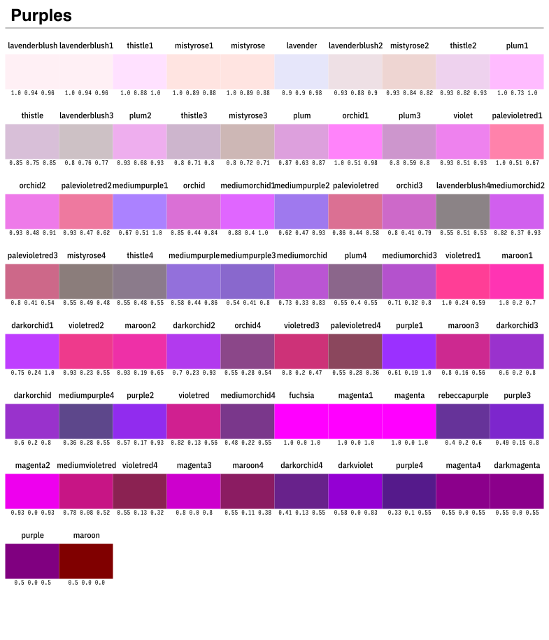
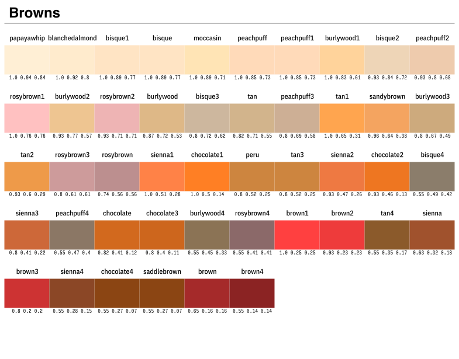
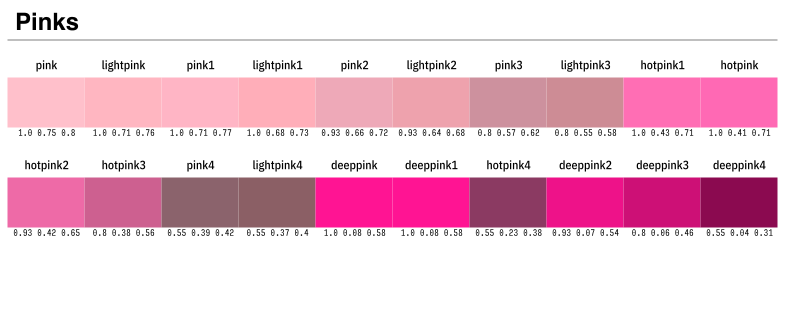

Named colors
The names of available colors are stored in alphabetical order in the dictionary Colors.color_names:
color_names = Dict(
"aliceblue" => (240, 248, 255),
"antiquewhite" => (250, 235, 215),
"antiquewhite1" => (255, 239, 219),
...Named colors are available as RGB{N0f8} using:
julia> using Colors
julia> color = colorant"indianred"
RGB{N0f8}(0.804,0.361,0.361)or
julia> cname = "indianred"
"indianred"
julia> color = parse(Colorant, cname)
RGB{N0f8}(0.804,0.361,0.361)










These colors can be converted to RGB{N0f32} (for example) using:
julia> using FixedPointNumbers
julia> RGB{N0f32}(color)
RGB{N0f32}(0.803922,0.360784,0.360784)